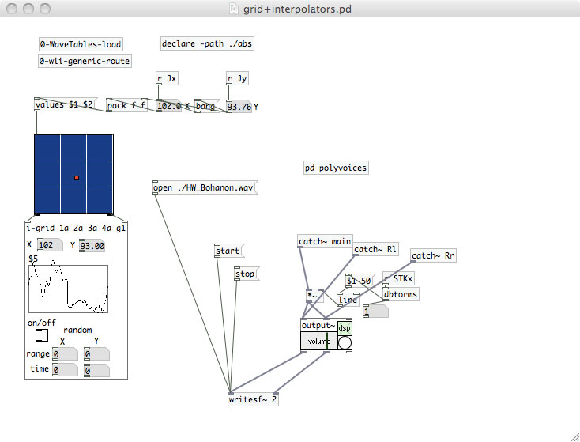
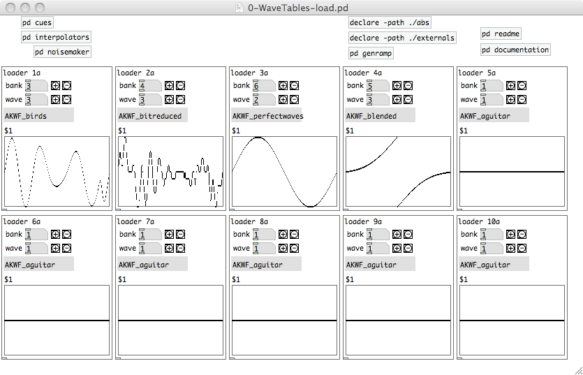
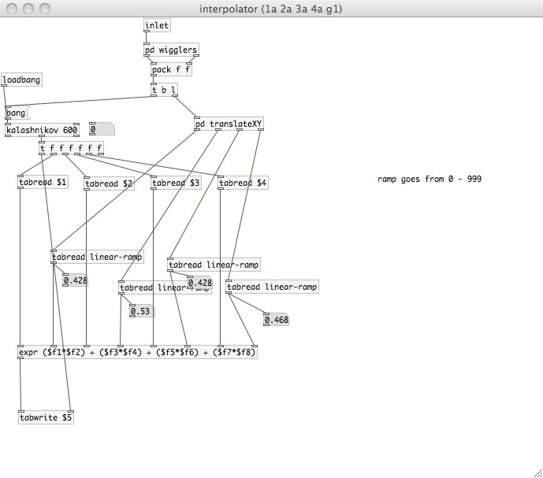
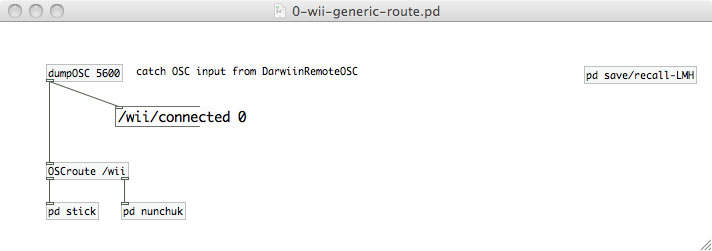
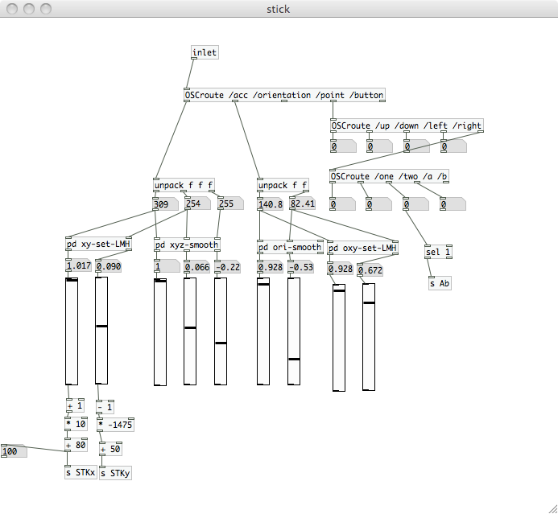
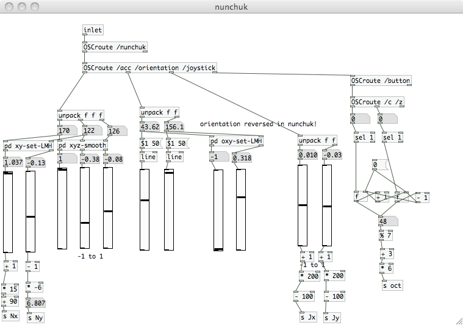
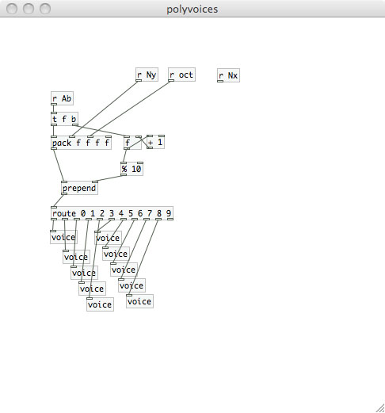
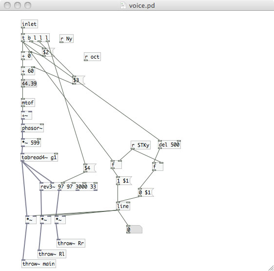

A Wii Bit of Fun
Next generation game controller turned next generation instrument
A wavetable synthesizer with a unique control method: a wiimote. The wiimote provides a versatile platform with which to create an expressive instrument utilizing the accelerometers, buttons, and joystick. Using the DarwiinRemote software (seen above), one can easily route OSC information via bluetooth to Pure Data and map its parameters from there. I used the 'A' button to trigger my midi note and attack/decay, the y-axis accelerometer of the stick to create an overal amplitude control, the joystick to place my interpolation point of the four tables being used to create the wave from which I was reading, and the two buttons on the nunchuck to change octaves.
Screenshots and video:
Front of patch
Wavetable loading patch
4 table interpolator
OSC information routing from wiimote
Stick information parser
Nunchuck information parser
Voice routing
Wavetable voice